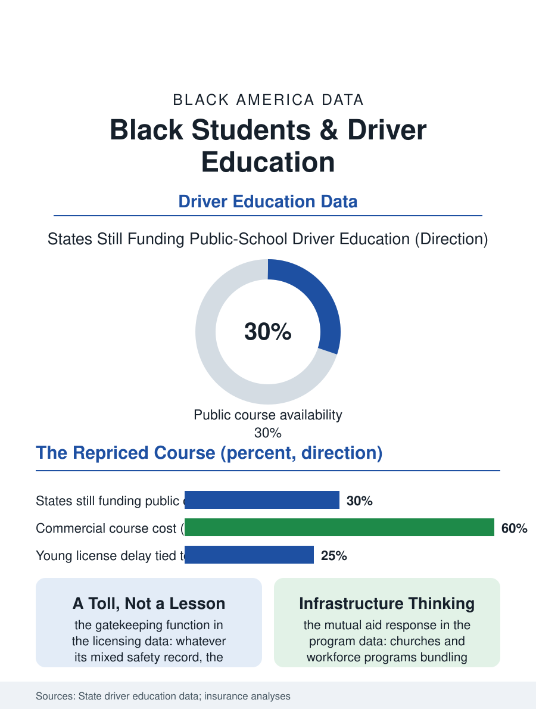

Black Education
The Course That Left the Building: Black Students and Driver Education
Driver ed left the public school for the strip mall, repricing the license's first step onto the family budget, with the toll falling where the license matters most. The driver ed file.

Driver education is the school subject that became a market: once a standard public school course, it migrated to the private market in most states across the last generation, repricing the license's first step from free to several hundred dollars and handing the access question to the family budget. The transportation file's license gap begins, measurably, at the classroom door this article examines. This article reads the driver education file.
The Course That Left the Building
The history is a clean policy arc. Driver education entered the public high schools in the postwar decades as a safety program, its advocates promising, and its early evaluations partly delivering, reductions in the teenage crash rates that made the automobile the young's leading killer, and by the 1970s the course was a fixture of the comprehensive high school, its dual-control sedans a campus landmark. The budget decades then unwound it: state after state cut the subsidy, districts charged fees the courts in some states struck down and in others sustained, and the commercial driving school absorbed the market, so that the current map is a patchwork, a few states still funding the public course, most leaving the family to buy the instruction the license's graduated requirements effectively mandate for the youngest drivers. The Black student's position on that map compounds the transportation file: the districts likeliest to have dropped the free course are the fiscally stressed urban and rural ones, the commercial school's price lands on the budget the wealth file describes, and the alternative, waiting until eighteen to license without the course, delays the license past the first job's requirement in the car-dependent geographies, the license delay cascading into the employment file's young worker data in the studies that track it.
The Safety Ledger
The research file complicates the nostalgia honestly: the modern evaluations of driver education's safety effect are mixed, the course's clearest benefit being earlier licensure under supervision rather than lower lifetime crash rates, while the graduated licensing systems, the staged privileges, the night and passenger restrictions, carry the strong safety evidence of the era. The access question survives the complication, because the course's function in the current system is not primarily its safety content but its gatekeeping one: in many states the certificate discounts the insurance premium, satisfies the supervised hours' verification, and smooths the testing process, so that its price is a toll on the licensure path whose burden distributes by income and race in the fee data. The insurance discount deserves its own line, since the premium for the young Black male driver in the rating data is the highest in the consumer file, and the course discount is one of the few levers the family controls, making the commercial school's tuition, perversely, a rational investment exactly for the families least able to stake it. The community responses in the file are the mutual aid pattern's: the churches and the driving instructors of the community running sliding-scale schools, the nonprofit programs bundling the course with the workforce programs whose placements require the license, treating driver education as employment infrastructure, which the data on job access by car say it precisely is.
The License's First Price
The driver education file closes by connecting its small tuition to the large files it feeds: the license file's gap among young adults, the insurance file's premiums, the employment file's geography of the freeway-exit job, all have an early entry in the semester the course left the public building. The policy options in the literature are the map's own: restore the public course where the fiscal case holds, voucher the commercial one where it does not, or fold the instruction into the workforce and youth employment systems that already pay for the license's other costs, each priced in the studies at a fraction of the downstream programs that remediate the unlicensed worker's exclusion. The school subject that taught the community's grandparents for free now charges its grandchildren several hundred dollars at the strip mall school, with financing available. The file's last datum is the enrollment consequence the fee studies measure, small in the state's totals and large in the affected cohorts: the students who delay are the students the license matters most for, the rural and the working, whose first jobs sit at the freeway's exit. The course moved out of the building a generation ago. The bill arrived, as bills in this atlas do, at the address least able to pay it.
More in Black Education
Black Educational Attainment: High School Parity, the College Gap
About 89 percent of Black adults hold a high school diploma and one in four holds a bachelor's degree or higher — the attainment ladder, the college completion gap, and the generational trend.
Historically Black Colleges and Universities: Enrollment and Degrees
More than 100 HBCUs enroll roughly 290,000 students and award about one in six Black bachelor's degrees — an outsized share from a small sector. The federal education data.
Black College Enrollment: 2.4 Million Students
About 2.4 million Black students are enrolled in American colleges — nearly two-thirds of them women. The NCES enrollment data by sector, level, and trend.
Source: State driver education program data; Governors Highway Safety Association reports; teen licensure and insurance studies.